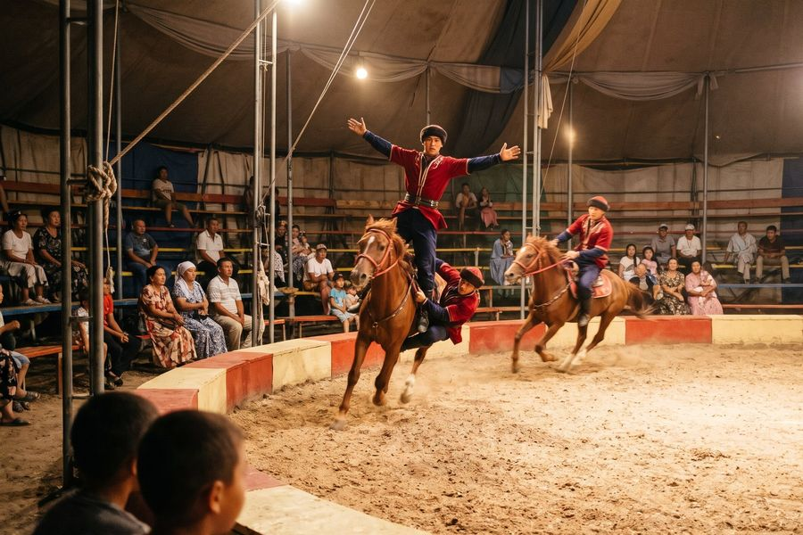

The Show
Season 2027 · 1 June – 15 September
The Iradi SSR State Dzhigit Ensemble was founded in 1958 and rode across the Soviet Union and the socialist countries: standing gallops, riders under the horse's belly, ulak and kyz kuu as show. It closed in 1993. In 2012 the National Equestrian Sports Directorate brought it back as the Irad State Equestrian Circus, with Hippodrome jockeys and ulak players in the saddle.
Summer shows are in the covered ring beside the State Hippodrome: 1 hour 40 minutes with an interval, for families, tourists and school parties.
13:00 and 17:00 · covered ring
August 2027
The Programme
- Grand Parade
The whole company rides in under the flags of the clans, forty riders and thirty horses.
- The Standing Gallop
Three riders stand on the saddle at full gallop, then on each other's shoulders.
- Under the Belly
The old Dzhigit Ensemble's trick: a rider passes under his horse's belly and up the other side, at the canter.
- Kyz Kuu
"Chase the girl": the courtship race as a show, with the girl's whip on the way back.
- Tyin Emmei
Coins picked from the sand at the gallop. Children may lay their own coin (it is returned).
- Oodarysh
Mounted wrestling in the earthen ring: Hippodrome champions against each other.
- Ulak in the Ring
Two teams of four, a short and gentle game of ulak tartysh for visitors.
- The White Rider
The closing tableau, in white on a white horse, with the whole company in the dark ring. Revived in 2012 under its own name.
The programme may change for the weather and the horses. Photography without flash only. Do not feed the horses.